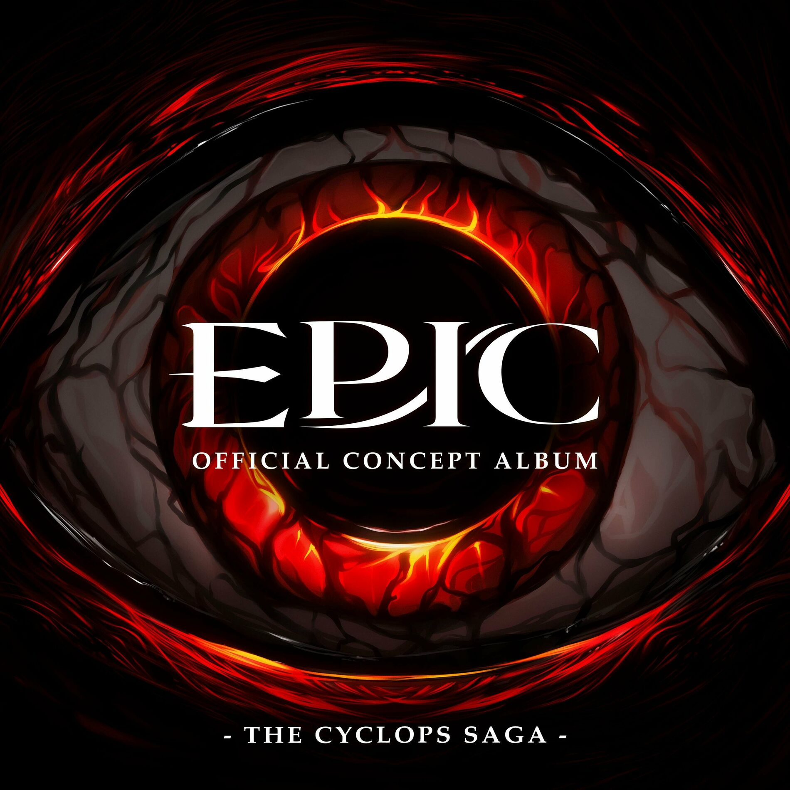

| Überlebt | |
|---|---|
|  | |
| Song Information | |
| Song Nr. | 7 |
| Akt (Saga) | Akt 1 (Zyklopen Saga) |
| Gesungen von: | Michael Hinterlechner |
| Epic: German Ensemble | |
| Charaktere | Odysseus |
| Poliphemus | |
| Polites | |
| Griechische Soldaten | |
| Übersetzt von | |
| Chronologie | |
| Vorheriger | Poliphemus |
| Nächster: | Denkt stets an sie |
Überlebt
Überlebt ist der zweite Song der Zyklopen Saga. Dieser Song spielt auch in der Höhle von Poliphemus, wo Odysseus seine Crew in den Kampf gegen den Zyklopen führt.
Songtext
| Original Text | Deutscher Text |
|---|---|
|
[ENSEMBLE]
Po-ly-phe-mus Po-ly-phe-mus [ODYSSEUS] My brothers The rest of our fleet They wait at the beach And if we're defeated, they’re good as dead Straight ahead, that is who we're fighting [ENSEMBLE] Po-ly-phe-mus [ODYSSEUS, SOLDATEN] No backup, no chance for support So draw out your swords Our foe must be thwarted right here and now Show me how great is your will to survive Six hundred lives at stake It's just one life to take And when we kill him then our journey’s over No dying on me now Defeat is not allowed We must live through this day so Fight, fight, fight Surround him, surround him Attack from behind, keep distance in mind And stay in his blindspot and strike his heels, strike the heels Show him that we're deadly Exhaust him, exhaust him Don't let him get close, he's strong but he's slow He can't land a blow if we're out of reach Find a breach Stand up and fight for your lives [SOLDATEN, ODYSSEUS] Six hundred lives at stake It's just one life to take And when we kill him then our journey’s over Push forward No dying on us now Defeat is not allowed We must live through this day so Fight, fight, fight [POLITES] Captain… [POLIPHEMUS] Enough [SOLDAT] He’s got a club… He's got a club! [SOLDAT] What are our orders? Captain? Captain! [POLIPHEMUS] You’ve hurt me enough Six hundred lives I'll take Six hundred lives I'll break And when I kill you then my pain is over You're dying here and now Escape is not allowed You won’t live through this day now die Die... |
Trivia
- Dieser Song wurde in C moll und im 12/8 Takt geschrieben.
- Dieser Song hat die selbe Melodie wie die Einführung von Zeus in Das Pferd und der Säugling als er Odysseus befiehlt Hektor's Sohn zu töten.